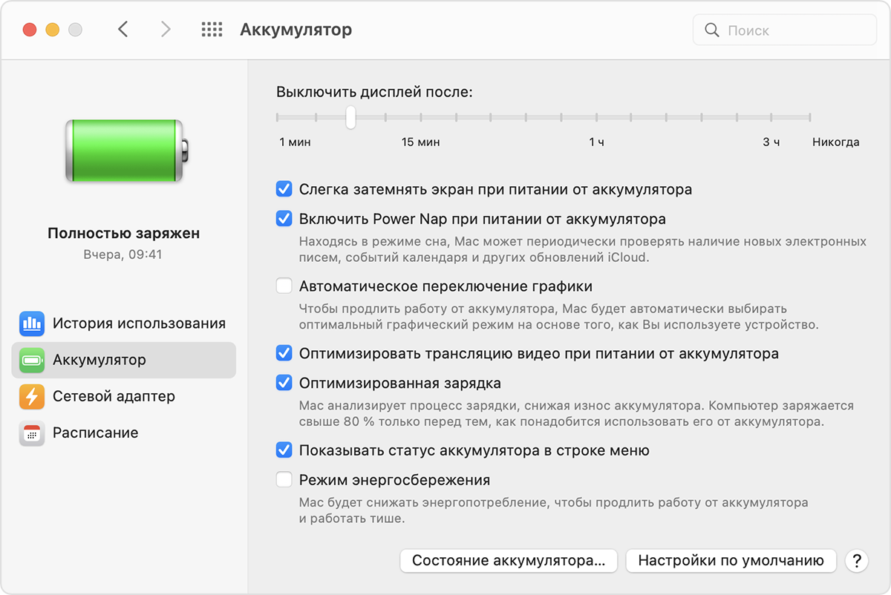

Избегайте экстремальных температур, ваше устройство рассчитано на работу в большом диапазоне температур. И всё же идеальная температура эксплуатации — в пределах от 16 до 22 °C. Особенно рискованно использовать устройство при температуре выше 35 °C. Это может привести к снижению ёмкости его аккумулятора и, как следствие, к сокращению времени работы вашего устройства.
10 °С
35 °С
Слишком
холодно
Комнатная
температура
Слишком
жарко
Оптимальная температура для работы MacBook:
от 10 до 35 °C. Температура при хранении: от –20 до +45 °C.
Срок службы аккумулятора
Оценить срок службы аккумулятора вашего MacBook можно также по числу циклов его полной зарядки и разрядки. Ознакомиться с этой информацией можно в меню:
«Об этом Mac» > «Отчет о системе» > «Электропитание» > «Количество циклов перезарядки».
Аккумулятор MacBook рассчитан на полноценную работу до 1000 циклов. В дальнейшем его емкость опускается до критичного уровня, поэтому его требуется необходимо заменить на новый. Рекомендуем делать это в одном из авторизованных сервисных центров.
Проверка состояния аккумулятора
Состояние аккумулятора можно проверить в его настройках или в меню «Состояние аккумулятора»:
Нажмите на логотип Apple > «Системные настройки», нажмите «Аккумулятор», на боковой панели выберите «Аккумулятор», затем нажмите кнопку «Состояние аккумулятора».
В macOS Catalina или более ранней версии, удерживая клавишу Option, щелкните значок аккумулятора в строке меню, чтобы открыть меню состояния аккумулятора.
В меню будет выведен один из следующих индикаторов состояния.
«Нормальное». Аккумулятор исправен.
«Рекомендуется обслуживание». Аккумулятор стал хуже удерживать заряд, чем когда он был новым, или работает ненормально. Компьютером Mac можно продолжать пользоваться, но его следует доставить в магазин Apple Store или в авторизованный сервисный центр компании Apple для проведения диагностики аккумулятора.
Оптимизация времени работы от аккумулятора
Время работы ноутбука от аккумулятора зависит от конфигурации оборудования и режима эксплуатации.
Вот основные действия, которые можно выполнить, чтобы максимально эффективно использовать аккумулятор ноутбука.

Для обеспечения максимального времени работы от аккумулятора используйте следующие настройки:
Установите флажок «Слегка затемнять экран при питании от аккумулятора». Эта настройка позволяет компьютеру Mac регулировать яркость дисплея до 75 % при отключении компьютера от сети.
Снимите флажок «Включить Power Nap при питании от аккумулятора». Эта настройка запрещает компьютеру Mac проверять почту или другие обновления iCloud в режиме сна, что увеличивает время работы в режиме ожидания.
Установите флажок «Автоматическое переключение графики». Эта настройка позволяет моделям MacBook Pro с несколькими графическими процессорами автоматически переключаться между ними, чтобы продлить время работы от аккумулятора.
Установите флажок «Режим энергосбережения». Эта настройка снижает потребление энергии, чтобы увеличить время работы от аккумулятора.